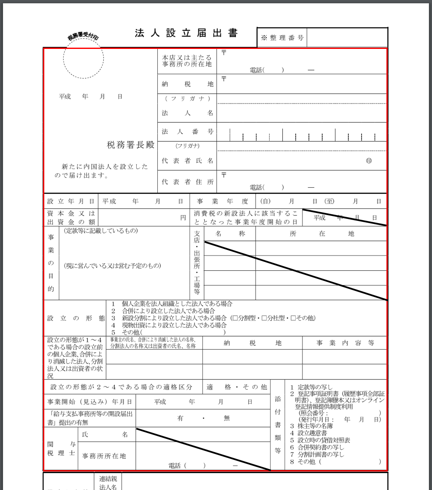
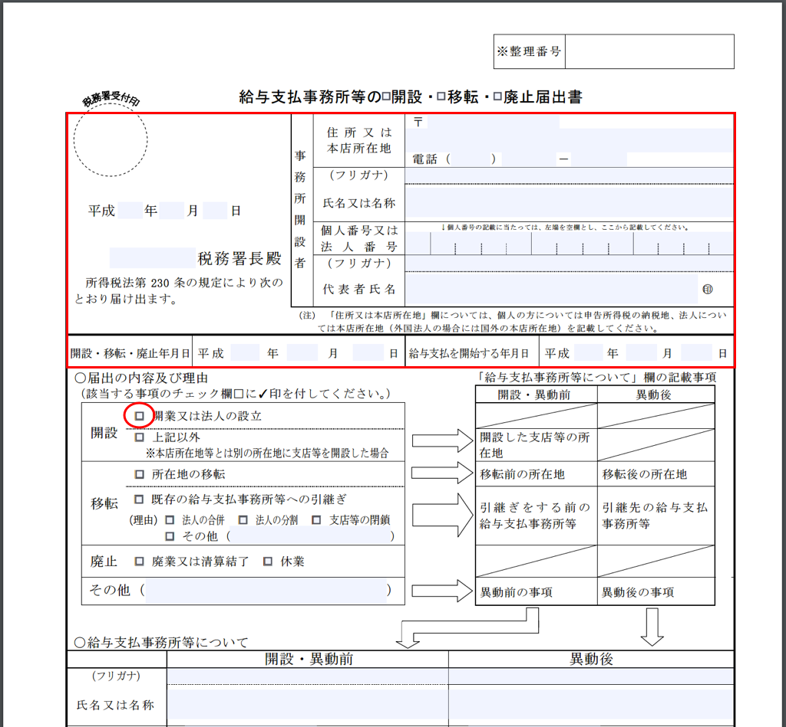
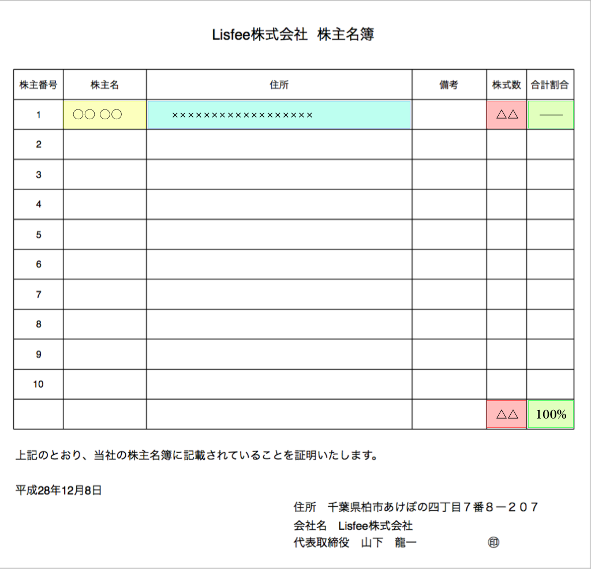
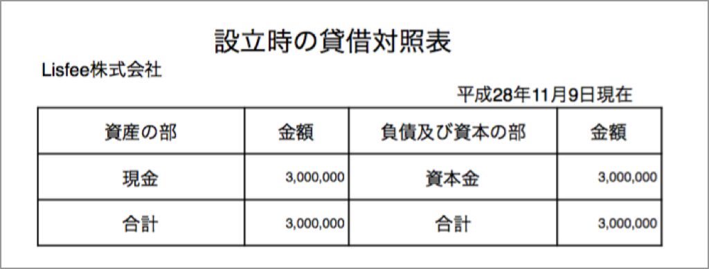

会社の設立手続きパート⑥です。
今日は税務署への届出書類の作成についてご説明したいと思います。（二回に分けてご説明する予定です。）
本日は中でも、法人設立届出書と給与支払事務所の開設届出書、株主名簿及び、設立時の貸借対照表についてその書き方を見ていきたいのですが、これら最初の二つの書類は国税庁のホームページ内に掲載されていますので、そちらからダウンロードしていただくのがいいかと思います。
・法人設立届出書
：https://www.nta.go.jp/shiraberu/zeiho-kaishaku/tsutatsu/kobetsu/hojin/010705/pdf/tt001.pdf
・給与支払事務所の開設届出書
：https://www.nta.go.jp/shiraberu/zeiho-kaishaku/tsutatsu/kobetsu/hojin/010705/pdf/2801h009.pdf
法人設立届出書についてですが、下記フォーマットの中の赤枠内を記載していただければと思います。私は税理士の方に頼まなかったので、関与税理士の情報などは空欄のまま提出しました。
給与支払事務所の開設届出書についても、赤枠内を記載して頂ければよく、こちらは「届出の内容及び理由」の項目も「開設」部分にレ点を記入するだけですので簡単です。
株主名簿については、設立時は少数の株主しかいないのが一般的かと思いますので、それらをリストの形式で記載しましょう。
設立時の貸借対照表については、多くの場合現金の元入れとなるかと思いますので、このように書けばよいでしょう。当社の事例を下記に載せておきますので、こちらもご参考いただければと思います。
